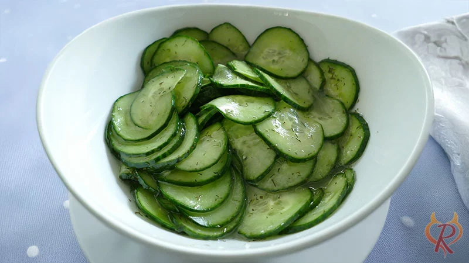

Gurkensalat Rezept

Beschreibung
Frischer, knackiger Gurkensalat mit einer
leichten Joghurtdressing, Dill und Zwiebeln.
Perfekt als erfrischende Beilage zu vielen Gerichten.
Zutatenliste
- große Salatgurken (ca. 700–800 g)
- kleine rote oder weiße Zwiebel (optional, aber empfohlen)
- 3–4 EL Weißweinessig oder Apfelessig
- –3 EL neutrales Öl (z. B. Sonnenblumenöl oder Rapsöl)
- 1 TL Zucker
- ½ TL Salz
- Frisch gemahlener Pfeffer
- 3–4 EL frischer Dill (fein gehackt)
Zubereitung
- Gurken vorbereiten
Die Gurken waschen und die Enden abschneiden. Mit einem Hobel oder scharfen Messer in sehr dünne Scheiben hobeln (ca. 2–3 mm dick).
Die Gurkenscheiben in ein Sieb geben, mit ½ TL Salz bestreuen und ca. 10–15 Minuten ziehen lassen. Dadurch tritt Wasser aus und der Salat wird nicht wässrig.
- Zwiebel vorbereiten
Die Zwiebel sehr fein würfeln oder in dünne Ringe schneiden. Wer es milder mag, kann sie kurz in kaltem Wasser einweichen.
- Dressing anrühren
In einer großen Schüssel Essig, Öl, Zucker, Pfeffer und den gehackten Dill gut verrühren.
- Gurken ausdrücken
Die Gurken nach der Ziehzeit kräftig mit den Händen oder einem Tuch ausdrücken, damit möglichst viel Flüssigkeit austritt.
- Vermengen
Die ausgedrückten Gurkenscheiben und die Zwiebel zum Dressing geben und alles gründlich mischen.
- Gurken ziehen lassen
Den Gurkensalat mindestens 15–30 Minuten (besser 1 Stunde) im Kühlschrank durchziehen lassen.
Vor dem Servieren nochmal abschmecken.
Zurück